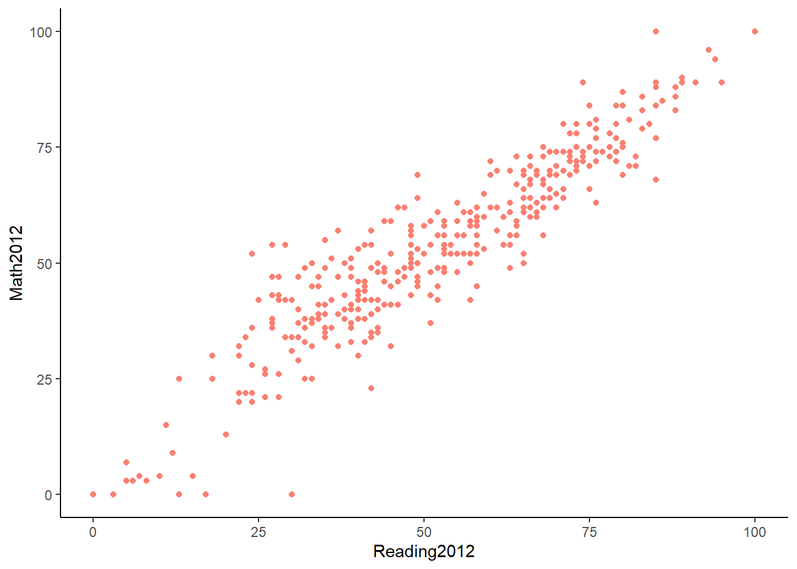
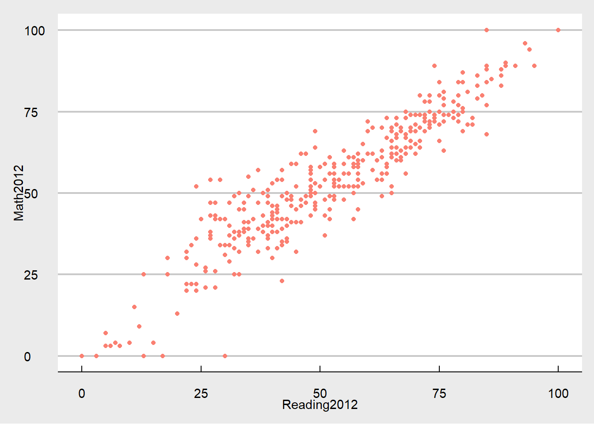

library(tidyverse) # incluye ggplot2
library(readxl) # funciones para importar xlsx
library(janitor) # funciones de limpieza
library(patchwork) #combinar gráficos de ggplot
library(ggExtra)
library(ggthemes) # nuevas temas para los
library(plotly) #gráficos interactivos # remotes::install_github("plotly/plotly")
library(tibble)
library(skimr) # reseumen numerico
library(modeest)
library(ggrepel) # añadir etiquetas a los gráficos
library(RColorBrewer) #paletas de colores
library(ggthemes)9 Temas para gráficos en ggplot
9.1 Cargar librerias
Librerias necesarias que se deben haber instalado previamente con install.packages(nombre del paquete) o en el panel Package.
9.2 Carga de datos
Se utilizará los datos de estudio de lectura y matemática de las escuelas de Miami en 2012 y 2013 por grado y Distrito llamado SchoolsMiamiDade.
Significado de las variables del dataframe SchoolsMiamiDade
Escuelas de Miami con notas promedio en las materias de lectura y matematica en los años 2012 y 2013.
SchoolsMiamiDade<- read.csv("data/SchoolsMiamiDade.csv")
SchoolsMiamiDade <- as_tibble(SchoolsMiamiDade)
head(SchoolsMiamiDade,5)# A tibble: 5 × 9
SchoolName BoardDistrict SchoolGrade Reading2012 Reading2013 ReadingDifference
<chr> <chr> <chr> <int> <int> <int>
1 0041 AIR … (9) A 82 80 -2
2 0070 CORA… (9) A 71 73 2
3 0071 EUGE… (5) A 69 69 0
4 0072 SUMM… (9) B 57 50 -7
5 0073 MAND… (9) C 34 32 -2
# ℹ 3 more variables: Math2012 <int>, Math2013 <int>, MathDifference <int>9.3 Temas (Themes) en ggplot
Los temas, son una forma de personalizar los componentes que no son datos en los gráficos, componentes como, títulos, etiquetas, fuentes, fondo, líneas de cuadrícula y leyendas. Se pueden utilizar temas para dar a las tramas un aspecto personalizado coherente. Si bien es posible personalizar los temas a través de las propiedades de la función theme(), ggplot2 integra siete temas que permiten personalizar el gráfico, añadiendo una nueva capa del tema seleccionado al gráfico.
A continuación se mostrará los temas predeterminados de ggplot y otros temas de otras librerias.
9.3.1 theme_bw()
Es una variación theme_grey() que utiliza un fondo blanco y finas líneas de cuadrícula grises.
SchoolsMiamiDade |>
ggplot(aes(Reading2012,Math2012))+
geom_point(color="salmon") +
theme_bw()Warning: Removed 91 rows containing missing values or values outside the scale range
(`geom_point()`).9.3.2 theme_linedraw()
Tema con solo líneas negras de varios anchos sobre fondos blancos, que recuerda a un dibujo lineal.
SchoolsMiamiDade |>
ggplot(aes(Reading2012,Math2012))+
geom_point(color="salmon") +
theme_linedraw()Warning: Removed 91 rows containing missing values or values outside the scale range
(`geom_point()`).9.3.3 theme_light()
Similar theme_linedraw()pero con líneas y ejes de color gris claro, para dirigir más atención a los datos.
SchoolsMiamiDade |>
ggplot(aes(Reading2012,Math2012))+
geom_point(color="salmon") +
theme_light()9.3.4 theme_dark()
Versión oscura de theme_light(), con tamaños de línea similares pero un fondo oscuro. Útil para hacer resaltar líneas finas de colores.
SchoolsMiamiDade |>
ggplot(aes(Reading2012,Math2012))+
geom_point(color="salmon") +
theme_dark()9.3.5 theme_minimal()
Un tema minimalista sin anotaciones de fondo.
SchoolsMiamiDade |>
ggplot(aes(Reading2012,Math2012))+
geom_point(color="salmon") +
theme_minimal()9.3.6 theme_classic()
Un tema de aspecto clásico, con líneas de eje x e y y sin líneas de cuadrícula.
SchoolsMiamiDade |>
ggplot(aes(Reading2012,Math2012))+
geom_point(color="salmon") +
theme_classic()
9.4 ggthemes
ggthemes es una libreria que contiene un conjunto de 20 temas diferentes que tienen el mismo funcionamiento de los temas predeterminado de ggplot.
9.4.1 Ejemplos de temas en ggthemes
SchoolsMiamiDade |>
ggplot(aes(Reading2012,Math2012))+
geom_point(color="salmon") +
theme_foundation()Warning: Removed 91 rows containing missing values or values outside the scale range
(`geom_point()`).SchoolsMiamiDade |>
ggplot(aes(Reading2012,Math2012))+
geom_point(color="salmon") +
theme_excel_new()Warning: Removed 91 rows containing missing values or values outside the scale range
(`geom_point()`).SchoolsMiamiDade |>
ggplot(aes(Reading2012,Math2012))+
geom_point(color="salmon") +
theme_excel()Warning: Removed 91 rows containing missing values or values outside the scale range
(`geom_point()`).SchoolsMiamiDade |>
ggplot(aes(Reading2012,Math2012))+
geom_point(color="salmon") +
theme_economist_white()Warning: Removed 91 rows containing missing values or values outside the scale range
(`geom_point()`).
SchoolsMiamiDade |>
ggplot(aes(Reading2012,Math2012))+
geom_point(color="salmon") +
theme_solarized()Warning: Removed 91 rows containing missing values or values outside the scale range
(`geom_point()`).SchoolsMiamiDade |>
ggplot(aes(Reading2012,Math2012))+
geom_point(color="salmon") +
theme_economist()Warning: Removed 91 rows containing missing values or values outside the scale range
(`geom_point()`).SchoolsMiamiDade |>
ggplot(aes(Reading2012,Math2012))+
geom_point(color="salmon") +
theme_calc()Warning: Removed 91 rows containing missing values or values outside the scale range
(`geom_point()`).SchoolsMiamiDade |>
ggplot(aes(Reading2012,Math2012))+
geom_point(color="salmon") +
theme_base()Warning: Removed 91 rows containing missing values or values outside the scale range
(`geom_point()`).